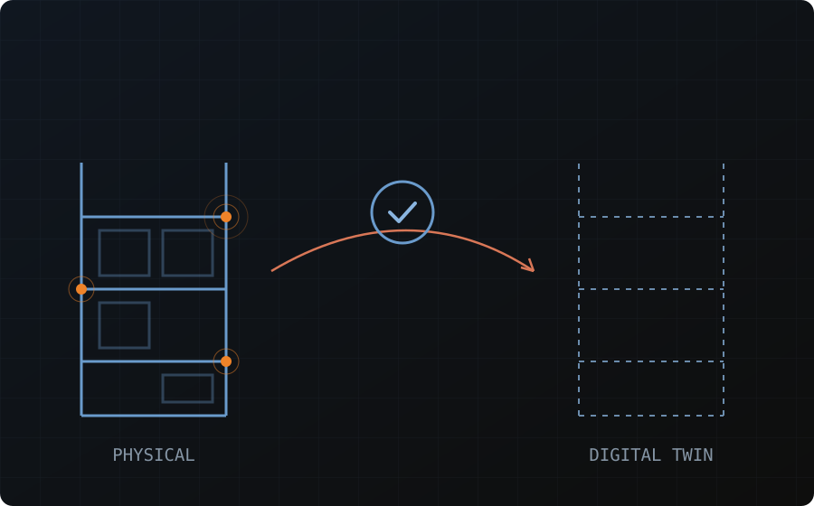

››› Capabilities
From sensor data to intelligent operations
Embedded IoT Sensing
Continuous telemetry from infrastructure, pallet, and bin-location sensors, delivered by our digital-twin and safety technology partner.
Intelligent Picking Logic
Dynamic, sensor-driven routing that cuts manual search time across the pick path.
Near-100% Inventory Accuracy
Sensor-verified counts and fast cycle-count reconciliation, replacing periodic manual checks.
››› Digital Twin
From flat layout to live facility: 2D → 8D
Each layer adds a new dimension of fidelity — until the twin mirrors what's actually happening on the floor in real time.
| Layer | Adds | Description |
|---|---|---|
| 2D | Layout | Base facility drawing / slotting plan |
| 4D | + Time | Sequencing & schedules, flow simulation |
| 6D | + Cost | Resource & cost modeling per layout option |
| 8D | + Live Data | Real-time asset & safety feed once operational |
Result: layouts and slotting strategies are stress-tested in simulation, not discovered after go-live.
››› Safety & Compliance
The same data layer keeps your facility audit-ready
Digital-twin infrastructure doubles as the backbone for structural safety and compliance — see Structural & Rack Audits for the full workflow.
Rack & Beam Audits
Scheduled, digitized, trackable structural audits tied to the same digital twin.
MHE Incident Logging
A standing incident log makes damage patterns visible network-wide.
Safety & Productivity Metrics
Dashboards showing safety, productivity, and MHE efficiency side by side.
Audit-Ready Compliance
Digitized inspection cycles with real-time issue tracking, always ready for review.
See your facility as a digital twin before you build it
Simulate layout, flow, and cost options before committing capital to a layout.